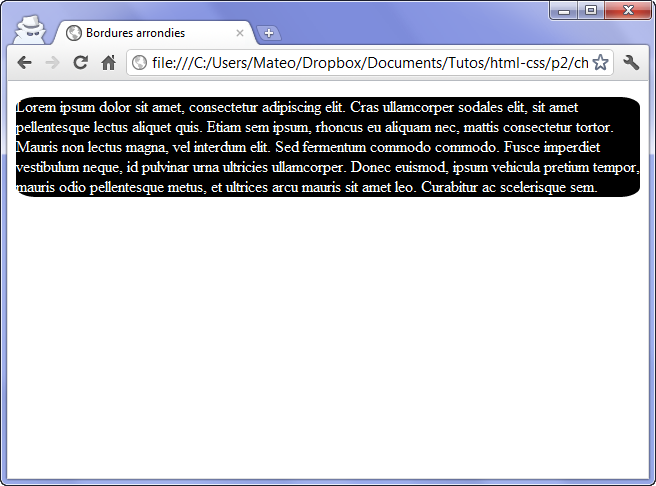

Hello et bienvenue sur mon site!
Pour le moment, mon site est un peu vide , Patientez encore un peu et il aura
de belles couleurs et de magnifiques images!
Le CSS permet la mise en page de votre page web.
Cela signifie que l'on va modifier l'apparence du texte (on dit qu'on le "met en forme").
Nous sommes toujours dans le CSS, et nous allons réutiliser ce que nous venons d'apprendre dans le chapitre précédent. Nous allons donc travailler directement au sein du fichier .css que nous avons créé.
Ce chapitre sera l'occasion de découvrir de nombreuses propriétés de CSS : nous allons voir comment modifier la taille du texte, changer la police, aligner le texte...
Pour mettre en italique, on utilise font-style qui peut prendre trois valeurs :
Nouveau chapitre, nouveau lot de propriétés CSS. Ici, nous allons nous intéresser aux bordures et aux effets d'ombrage que l'on peut appliquer aussi bien sur le texte que sur les blocs qui constituent notre page.
Pour aller à l'essentiel, je vous propose ici d'utiliser directement la super-propriété border qui regroupe l'ensemble de ces propriétés. On peut aller jusqu'à trois valeurs pour modifier l'apparence de la bordure:
Ceci est un exemple de bordure bleue en tirets épaisse de 3pixels
De plus, si vous voulez mettre des bordures différentes en fonction du côté (haut, bas, gauche ou droite), vous pouvez le faire sans problème. Dans ce cas, vous devrez utiliser ces quatre propriétés :
border-top (bordure du haut, border-bottom (bordure du bas), border-left (bordure de gauche), border-right (bordure de droite).
Il exite aussi border-top-width pour modifier l'épaisseur de la bordure du haut, border-top-color pour la couleur du haut, etc.
On peut modifier les bordures de n'importe quel type d'élément sur la page. Nous l'avons fait ici sur les paragraphes, mais on peut aussi modifier la bordure des images, des textes importants comme "strong", etc.
La propriété border-radius va nous permettre d'arrondir facilement les angles de n'importe quel élément. Il suffit d'indiquer la taille (« l'importance ») de l'arrondi en pixels :border-radius: 10 px;
Ceci est une exemple de bordure arrondie.
On peut aussi préciser la forme de l'arrondi pour chaque coin. Dans ce cas, indiquez quatre valeurs qui correspondent aux 4 angles dans cet ordre:
1 - haut gauche,
2 - haut droite,
3 - bas droite,
4 - bas gauche.
Enfin, il est possible d'affiner l'arrondi de nos angles en créant des courbes elliptiques. Dans ce cas, il faut indiquer deux valeurs séparées par un slash. Le mieux est certainement de tester pour voir l'effet.
Par exemple, p (border-radius:20px/10px;)
